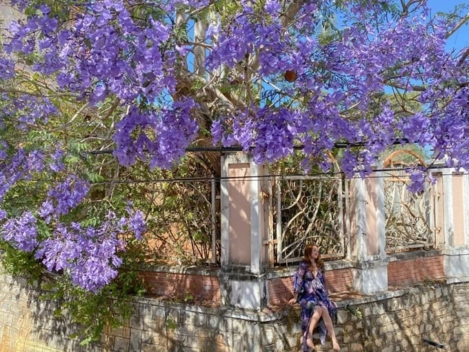

DU LỊCH ĐÀ LẠT Thời điểm nào lý tưởng nhất khi du lịch Đà Lạt? Không giống như các địa điểm đến khác du lịch chỉ mang tính thời vụ, riêng Đà Lạt bạn có thể đến quanh năm bởi mỗi mùa lại có nét đẹp riêng của nó. Bạn có thể thoải mái lựa chọn thời điểm phù hợp nhất cho chuyến đi Đà Lạt của mình. Nếu bạn muốn ngắm những đóa mai anh đào nở rộ quanh Hồ Xuân Hương thì từ tháng 2 đến tháng 4 khi mùa xuân đến chính là thời điểm đẹp nhất để chiêm ngưỡng hoa. Các nhành hoa phượng tím trên các tuyến phố thời điểm này cũng bắt đầu khoe sắc trổ bông lung linh đón nắng gió trong hương xuân nhẹ nhàng.  Trong cơn mưa ngày nắng hạ bất chợt đến rồi đi rất nhanh chóng, cảnh đẹp Đà Lạt khiến du khách phải thốt lên ngỡ ngàng. Dư vị về một chuyến đi du lịch Đà Lạt yên bình với thời tiết “lạ lùng” ngày hè sẽ càng tăng thêm nỗi nhớ khôn nguôi. Những cơn mưa rả rích vào tháng 8 sẽ làm tăng thêm tính hấp dẫn những dòng thác nước như được tiếp thêm sức mạnh để ào ào tuôn chảy, bọt tung trắng xóa. Thác Pren, thác Pongour, thác Dambri… mạnh mẽ nghe như tiếng tự tình suốt đêm ngày. Cuối năm, nếu bạn đi du lịch Đà Lạt tháng 10, 11, 12 phảng phất những áng sương mây lơ lửng trên bầu trời mang màu xanh ngắt. Tháng 10 đến tháng 12 hoa dã quỳ vươn mình đón nắng đẹp kiêu sa lung linh theo gió mới. Còn những bông mimosa mỏng manh e ấp trải dọc theo các triển đồi giống như bức tranh vẽ. Và còn rất nhiều các loài hoa rực rỡ khác như cánh đồng cải trắng, vườn hoa hướng dương, vườn hồng nhung, cánh đồng cỏ lau… Mỗi một mùa là Đà Lạt hiện lên với hương sắc riêng luôn cuốn hút du khách. Cách di chuyển khi đến Đà Lạt Máy bay Muốn tiết kiệm thời gian, máy bay sẽ là lựa chọn tối ưu. Đà Lạt có sân bay Liên Khương cách trung tâm thành phố 30km về phía Nam. Bạn có thể đi máy bay của các hãng Vietnam airlines, Vietjet Air, Jetstar để đến du lịch nghỉ dưỡng tại thành phố mộng mơ. Xe khách Với những bạn muốn tiết kiệm chi phí hoặc ngắm cảnh trên đường đến Đà Lạt thì xe khách sẽ là lựa chọn phù hợp. Tuy nhiên bạn sẽ mất nhiều thời gian hơn. Bạn có thể đi từ Hà Nội, Đà Nẵng, Nha Trang, thành phố Hồ Chí Minh là những điểm xuất phát chủ yếu thường được dân du lịch lựa chọn. Xe máy Xe máy cũng là một lựa chọn không tồi cho các bạn trẻ thích du lịch theo kiểu trải nghiệm, phượt bụi và tiết kiệm chi phí. Từ Sài Gòn lên tới Đà Lạt chỉ khoảng 300 cây, mất khoảng 7 – 10 tiếng đồng hồ nếu di chuyển bằng xe máy. Tuy tốn kha khá thời gian và sức lực những đây sẽ là những trải nghiệm khá thú vị, cũng như giúp bạn khám phá ra nhiều cảnh đẹp trên quãng dường di chuyển hơn. Di chuyển ở Đà Lạt như thế nào? Lựa chọn phương tiện di chuyển bằng xe máy sẽ giúp bạn chủ động trong chuyến hành trình của mình, giá thuê xe là 100k/ngày. Địa điểm thuê là ở cổng chợ Đà Lạt đường Nguyễn Thị Minh Khai hoặc đường Bùi Thị Xuân. Bởi Đà Lạt có nhiều cung đường đèo, cua gấp và khá dốc nên phương tiện xe máy sẽ thích hợp hơn trong quá trình di chuyển và khám phá mọi góc cạnh của thành phố. Cuốn cẩm nang du lịch Đà Lạt từ A đến Z mà BeSHINE cung cấp sẽ giống như người bạn đồng hành cùng bạn trên khắp mọi nẻo đường chinh phục, khám phá Đà Lạt mộng mơ, một xứ sở của muôn hoa đua nở khoe sắc thắm.